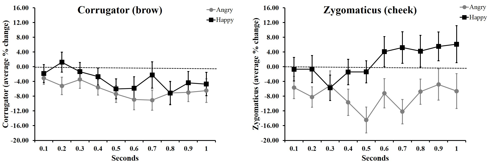
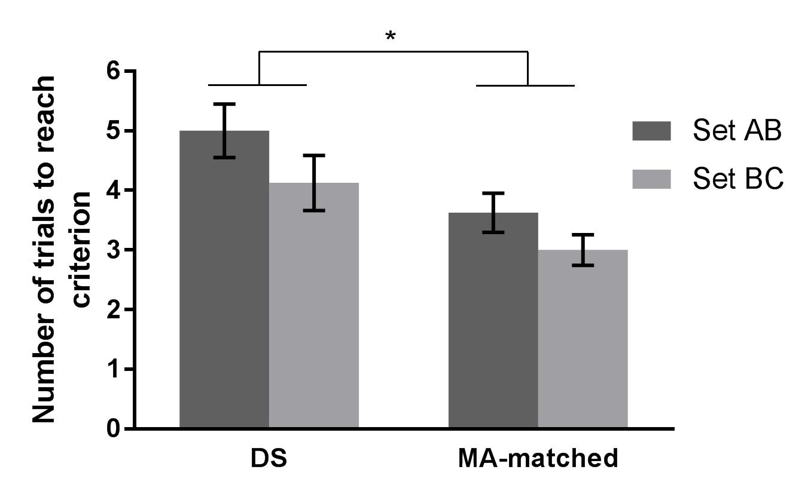
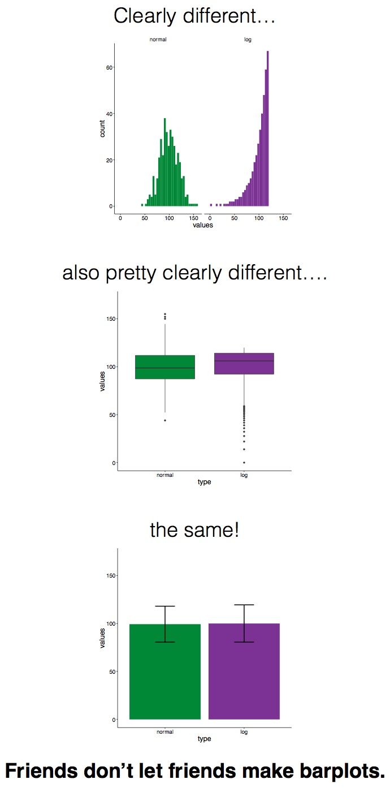
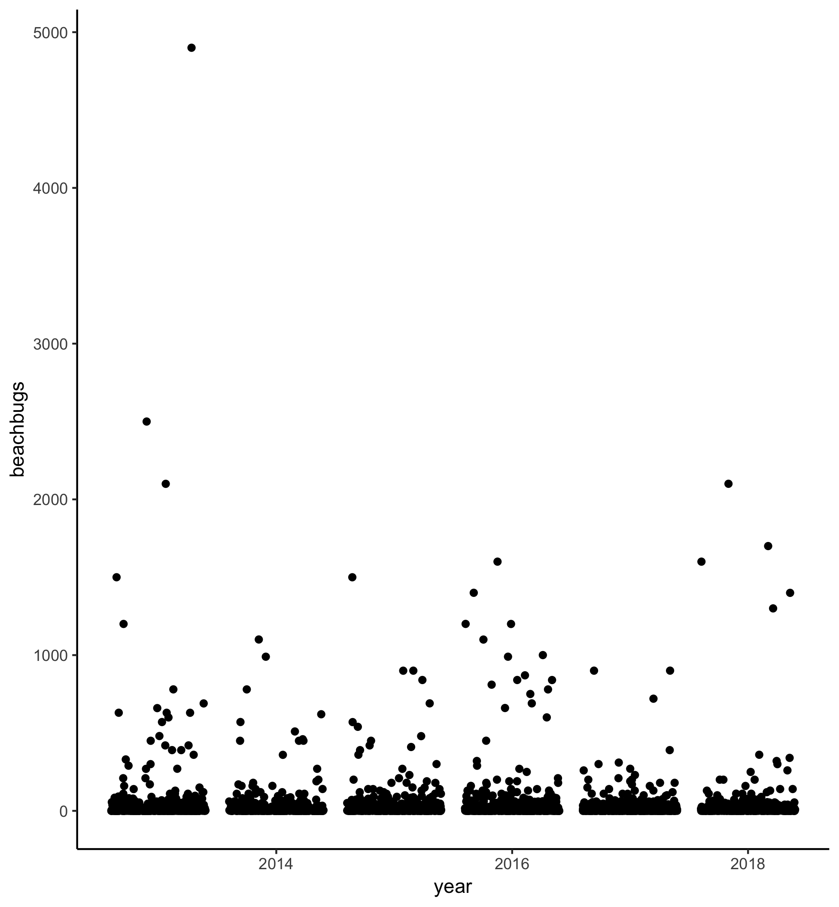
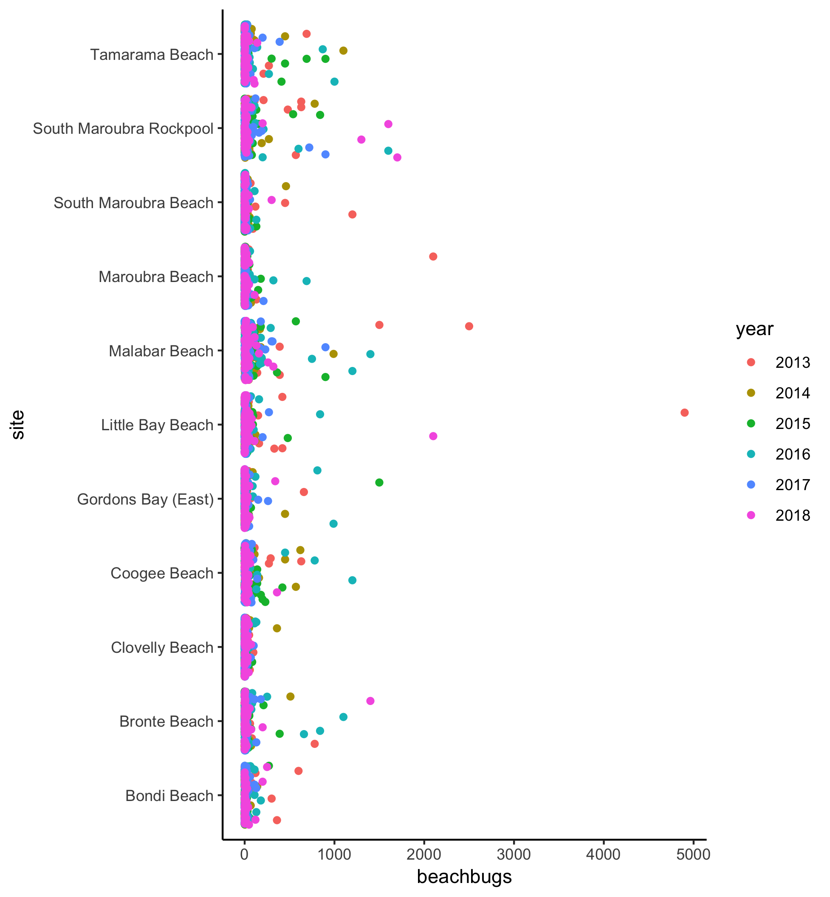
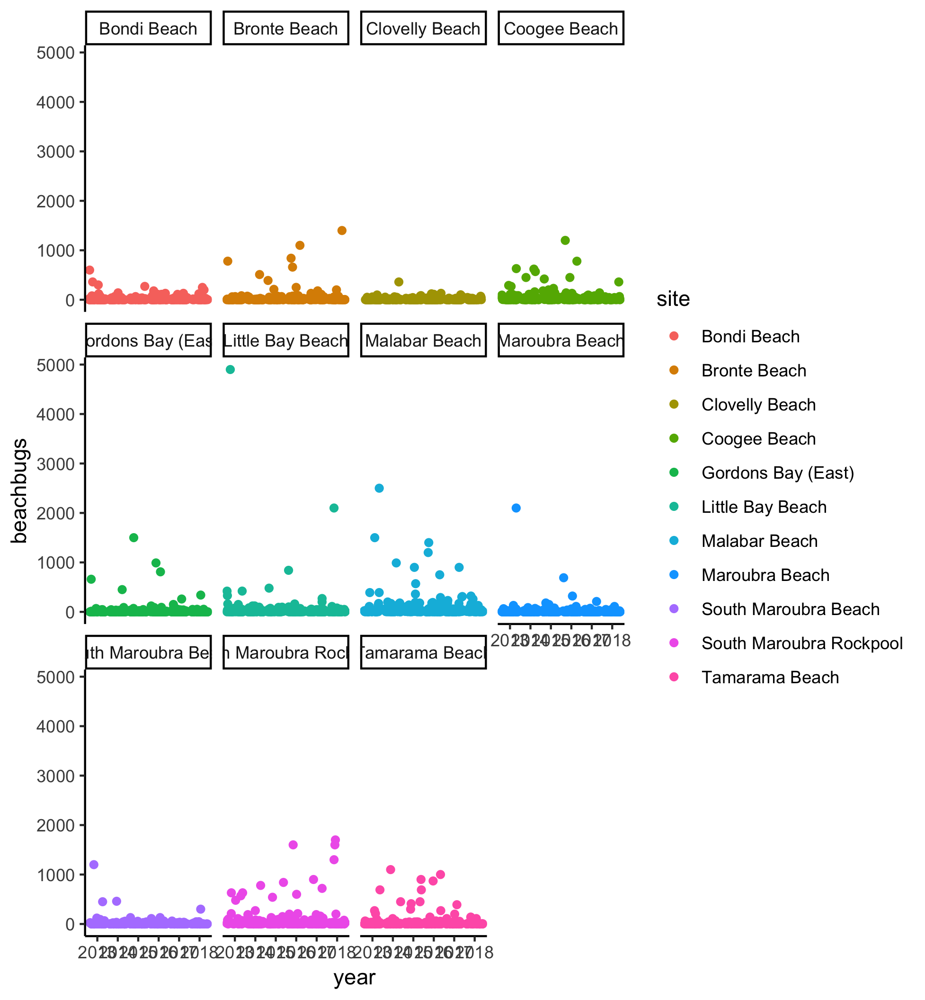
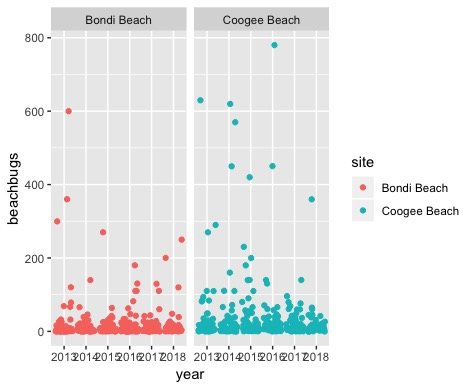

Plotting raw data
Until I1 started learning R about a year ago, I had only ever plotted averaged data. My plots looked like this…

Or this….

In 2016, I remember seeing #barbarplots t-shirts and tote bags at a conference, but back then I didn’t know that the figures were made in R.

Check out this video for more info about the #barbarplots kickstarter campaign. And learn how to explode bar plots using code from here.
{kind=link}
So, if not bar plots, then what?
Bar plots with standard error bars obviously have their limitations, but what is the alternative? In this lesson, we’re going to learn about how to plot raw data using ggplot2. As in prior units, we’ll be using the sydneybeaches dataset, so be sure to have that on hand!
Lesson Outcomes
By the end of this lesson, you should be able to :
- use
geom_point,geom_jitter, andgeom_quasirandomto plot raw data - use colour to differentiate subsets of data
- use
facet_wrapto plot subsets of data separately - combine
dpylrfunctions likefilterwithggplot - use
ggsaveto export plots
Plotting bug levels by year
If the councils that look after our beaches are doing their job, beaches should be less contaminated than they were 5 years ago, right? Let’s plot bug levels over time and see whether things seem to be getting better.
In this screencast, we’ll review:
- How to write cleaned data to a new csv file
- How to plot raw data using
geom_point,geom_jitter, andgeom_quasirandom
Here’s the plot for reference:

Your turn to have a go
Watch the video and then carry out the following steps:
- Use
geom_pointto plot buglevels by year - Play with
geom_jitterandgeom_quasirandom; which one is your favourite? - Check out the
ggbeeswarmvignette and try to make your quasirandom plot “smiley” or “frowny” - Try
geom_beeswarmtoo!
Using colour to plot bug levels by site
There doesn’t seem to be an obvious improvement in bug levels in the past 5 years. I wonder whether some beaches are just more variable than others. Let’s use colour to differentiate between different sites.
In this screencast, we’ll review:
- How to plot raw data using
geom_jitter - How to deal with NAs in your data
- How to use
coord_flipto make axis labels visible - How to differentiate subsets within your data by changing the point colour
- How to coerce variables into a different data format
Here’s the plot for reference:

Your turn to have a go
Watch the video and then carry out the following steps:
- Use
geom_jitterto plot bug levels for each site, differentiating between values from 2013-2018 with different coloured points - Try colouring the points by another variable (perhaps council or month). How does the visualisation change?
Using facet_wrap() to plot sites separately
Using colour is one way to differentiate between data points associated with different variables. Alternatively, you can group the data into different mini-plots using facet_wrap.
In this screencast, we’ll review:
- How to use
facet_wrapto visualise beachbug levels across years, separately for each site.
Here’s the plot for reference:

Your turn to have a go
Watch the video and perform the following steps:
- Use
geom_jitterandfacet_wrapto plot buglevels by year, separately for each site - Try plotting buglevels by site, separately for each year. Hint: maybe using
coord_flipis a good idea!
Putting it all together (dplyr + ggplot)
What if you only want to compare a couple of sites? Or restrict the range of scores to exclude obvious outliers? You can combine dyplyr functions like filter with ggplot using the pipe %>%. (The pipe was covered in #RYouWithMe Unit Clean It Up Lesson 1! Need a refresher? Click here!)
In this screencast, we’ll review:
- How to use combine
filterandggplotto plot subsets of your data
Here’s the plot for reference:

Your turn to have a go
Watch the video and perform the following steps:
- Pipe a
filterfunction and aggplottogether to plot only values that are less than 1000 - Try changing the filter value to only plot values less than 500
- Use
filterandggplotto compare data from Coogee and Bondi - Pick your two favorite beaches and make a plot that compares the variability in beachbug values
How to get your plots out of R Studio
Of course, these beautiful plots are not much use if they are stuck in R Studio. The easiest way to export your plots and save them elsewhere on your computer is by using ggsave.
In this screencast, we’ll review:
- How to export your plots using
ggsaveandhere
Watch the video and perform the following steps:
- Add a
ggsavecall after each chunk of code in your script to save your plots to a folder in your RYouWithMe project called “output” - Use the source button to run your code from top to bottom.
- For Sydney-based R-Ladies: Pick your favourite exported plot and post it to the #ryouwithme_3_vizwhiz channel on Slack!
Challenge - plot your own data
The next step is to plot your own data as raw values.
Steps to plotting your own raw data:
- Remember that ggplot only likes “long” data, so if you have observations across several columns, go back to Clean it up Lesson 4 and brush up on how to convert your wide data into long format
- Pick a categorical variable for your x axis
- Pick a continuous variable for your y axis
- Try out
geom_point,geom_jitter, orgeom_quasirandomand see which one makes the most sense for your data - Export using
ggsave
If you are one of our Sydney-based RLadies, share your success (and /or your frustration!) in our Slack channel #ryouwithme_3_vizwhiz!
Looking for more?
Here are some additional resources:
- Paul van der Laken makes a good argument against bar graphs in his blog post here
- Hadley Wickham’s book R for Data Science is a good place to start re data visualisation.
- Nick Tierney and Saskia Freytag were talking data visualisation with Di Cook on the Credibly Curious podcast recently. Check out the episode here.
On to Lesson 2
Footnotes
Jen Richmond, R-Ladies Sydney co-founder and #RYouWithMe screencaster!↩︎